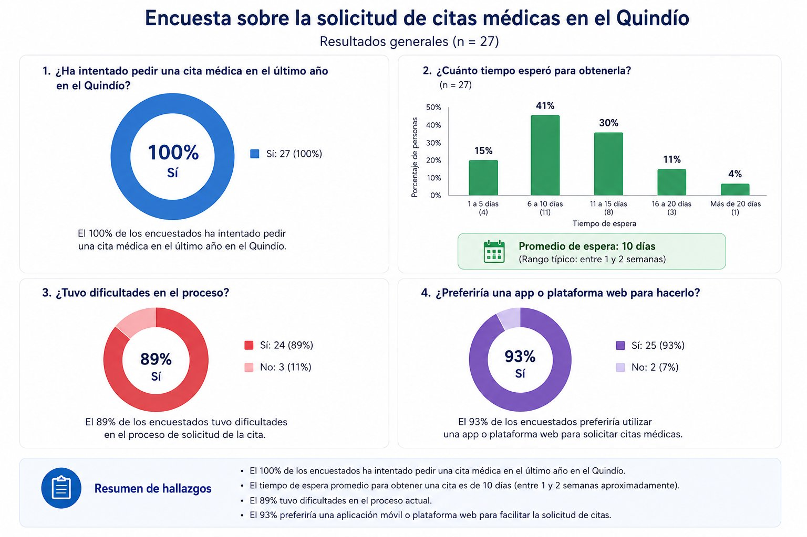
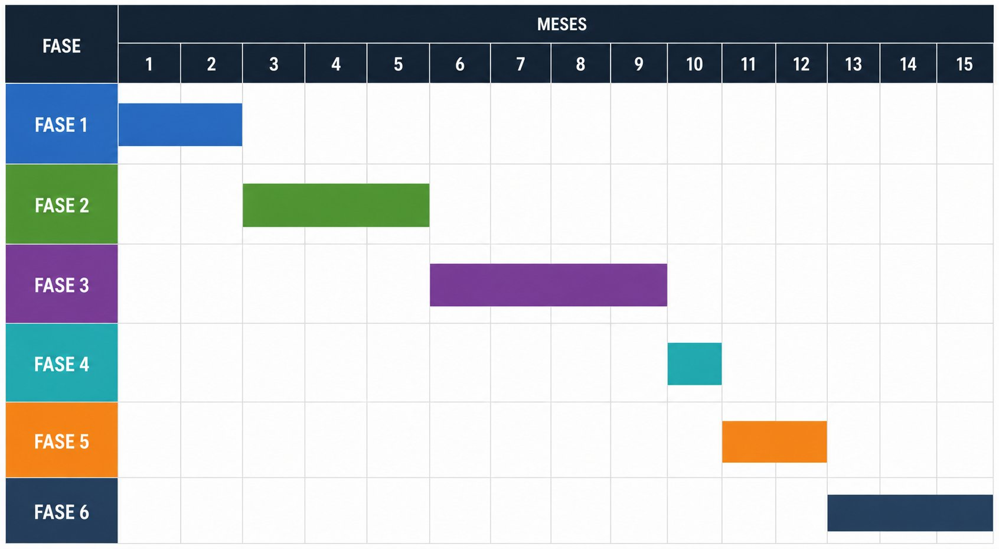

Aplicación del Método de los 7 Pasos del Ingeniero para analizar y proponer soluciones al caos en la agenda médica de los hospitales públicos del departamento.
Somos estudiantes de la asignatura Introducción a la Ingeniería de Sistemas y Computación, comprometidos con identificar y proponer soluciones a problemáticas reales de nuestra región.
Código: 1110043764
Código: 1091203954
Video explicativo del proyecto
5–7 minutos · YouTube público o no listado
En el departamento del Quindío, los hospitales públicos presentan graves deficiencias en el proceso de asignación de citas médicas. Los usuarios enfrentan demoras prolongadas, fallas en los sistemas de agendamiento y una atención al ciudadano que no responde a las necesidades reales de la población.
"Siempre dicen que no hay agendamiento. He esperado hasta cuatro meses por una cita para mi hija con cardiopatía congénita. Inicialmente estaba con Asmetsalud, pero tuve que interponer una tutela que no fue cumplida." — Luisa Fernanda Zapata Vélez, usuaria afectada · Crónica del Quindío, sept. 2024
"No podemos garantizar la calidad que queremos. Recibimos a diario quejas por demoras en cirugías, citas y entrega de medicamentos." — Luisa Fernanda Arcila Arcila, Secretaria de Salud del Quindío · Crónica del Quindío, mayo 2026
"Las EPS nos deben $17.000 millones — eso es media vigencia presupuestal, medio año de trabajo. Hemos aprendido a administrar la pobreza." — José Antonio Correa López, Gerente de Redsalud Armenia · Crónica del Quindío, mayo 2026
A continuación se documenta la aplicación de cada uno de los siete pasos del método de resolución de problemas de ingeniería, aplicados al problema de citas médicas en el Quindío.
Identificar con claridad qué problema se va a resolver
Los usuarios de los hospitales y centros de salud públicos del departamento del Quindío enfrentan serias dificultades para obtener citas médicas de manera oportuna. El proceso de agendamiento es lento, poco claro y en muchos casos inaccesible para personas mayores o de zonas rurales.
Requiere analizar sistemas de información, flujos de procesos, herramientas tecnológicas y necesidades de los usuarios para diseñar una solución sistemática y replicable.
Representación de la saturación en los servicios hospitalarios públicos.
Reunir datos, evidencias y fuentes relevantes
Se aplicó una encuesta a 27 personas del departamento del Quindío con cuatro preguntas clave. Los resultados son los siguientes:

| Indicador | Valor | Fuente |
|---|---|---|
| Espera promedio para medicina general (estándar) | ~1,49 días (en la práctica, mucho mayor) | Corte Constitucional, Auto 1174 de 2025 |
| Espera para medicina interna (especialista) | 7,66 días | ConsultorSalud / Circular 038 de 2025 |
| Espera para psiquiatría | 11,58 días | ConsultorSalud / Circular 038 de 2025 |
| Espera para gastroenterología | 13,9 días | ConsultorSalud / Circular 038 de 2025 |
| Aumento de quejas ante Supersalud (2024) | +12% frente a 2023 | El Universal / Supersalud |
| Incremento en peticiones y reclamos (may. 2024) | +15,51% frente al año anterior | Supersalud |
| Deuda de EPS con hospitales del Quindío | Supera $1 billón de pesos | Crónica del Quindío, mayo 2026 |
| Deuda específica con Redsalud Armenia | ~$17.000 millones | Gerente Redsalud Armenia, mayo 2026 |
Qué límites tiene la solución y qué debe cumplir
Proponer múltiples soluciones posibles al problema
El equipo identificó las siguientes posibles soluciones:
Desarrollo de una aplicación móvil gratuita para Android que permita agendar, cancelar y consultar citas desde el celular.
Un call center departamental único con horario extendido que gestione todas las citas de los hospitales públicos del Quindío.
Plataforma web accesible desde computadores, complementada con kioscos táctiles instalados en hospitales, alcaldías y bibliotecas municipales.
Bot de WhatsApp conectado a una base de datos centralizada para gestionar citas sin necesidad de descargar ninguna aplicación adicional.
Comparar opciones con base en los criterios definidos
Se evaluó cada alternativa según los criterios del Paso 3, usando una escala de 1 a 5 (5 = cumple totalmente el criterio):
| Criterio | A – App | B – Call center | C – Web + kioscos | D – WhatsApp |
|---|---|---|---|---|
| Reducción tiempo de espera | 5 | 3 | 4 | 4 |
| Accesible para adultos mayores | 2 | 5 | 4 | 3 |
| Funciona sin internet | 1 | 5 | 2 | 2 |
| Integración con EPS | 4 | 3 | 4 | 3 |
| Escalabilidad | 5 | 3 | 4 | 4 |
| Costo de implementación | 2 | 3 | 3 | 4 |
| Total | 19 | 22 | 21 | 20 |
Plan de acción para ejecutar la alternativa elegida
| Fase | Actividad | Responsable | Tiempo est. |
|---|---|---|---|
| Fase 1 | Diagnóstico y mapeo de procesos actuales | Ingenieros + hospitales | 2 meses |
| Fase 2 | Diseño de la plataforma y protocolo del call center | Equipo TI + Secretaría | 3 meses |
| Fase 3 | Desarrollo del bot de WhatsApp y base de datos | Desarrolladores | 4 meses |
| Fase 4 | Capacitación del personal administrativo | RRHH hospitalario | 1 mes |
| Fase 5 | Piloto en 2 hospitales (Armenia y Calarcá) | Todos los actores | 2 meses |
| Fase 6 | Evaluación y expansión a todo el departamento | Secretaría de Salud | 3 meses |

Diagrama de Gantt — distribución temporal de las 6 fases del proyecto a lo largo de 15 meses.
Medir si la solución resolvió el problema
Con la implementación del sistema híbrido se proyecta:
Aplicar el Método de los 7 Pasos del Ingeniero nos permitió comprender que resolver un problema real no se trata solo de proponer una solución tecnológica, sino de entender primero a fondo el contexto, las personas afectadas y las limitaciones del entorno. Antes de este ejercicio, veíamos el problema de las citas médicas como algo cotidiano y normalizado; después de investigarlo, entendemos que detrás de cada fila y cada cita negada hay una persona que necesita atención urgente.
Y es que ademas de todo lo aprendido con la ayuda de este proyecto, tambien debemos de tener en cuenta todo lo que se aprendio del trabajo en equipo, logrando grandes avances en la comunicion.
Tras el análisis comparativo, el equipo propone la siguiente solución integral:
Implementación de una línea de atención centralizada del departamento del Quindío, integrada con un bot de WhatsApp con lenguaje natural simple. Ambos canales se conectan a una base de datos unificada que comparten todos los hospitales públicos del departamento.
Esto permite que personas sin smartphone usen el teléfono fijo o celular básico, mientras quienes tienen WhatsApp puedan gestionar sus citas sin descargar nada nuevo. El sistema también envía recordatorios automáticos para reducir las citas perdidas.
Detrás de cada estadística hay una decisión difícil. En este simulador asumes el rol del administrador de un centro de salud del Quindío: recursos limitados, más pacientes que slots disponibles, y la presión de no dejar caer el sistema.
Fuentes consultadas para la elaboración de este proyecto: